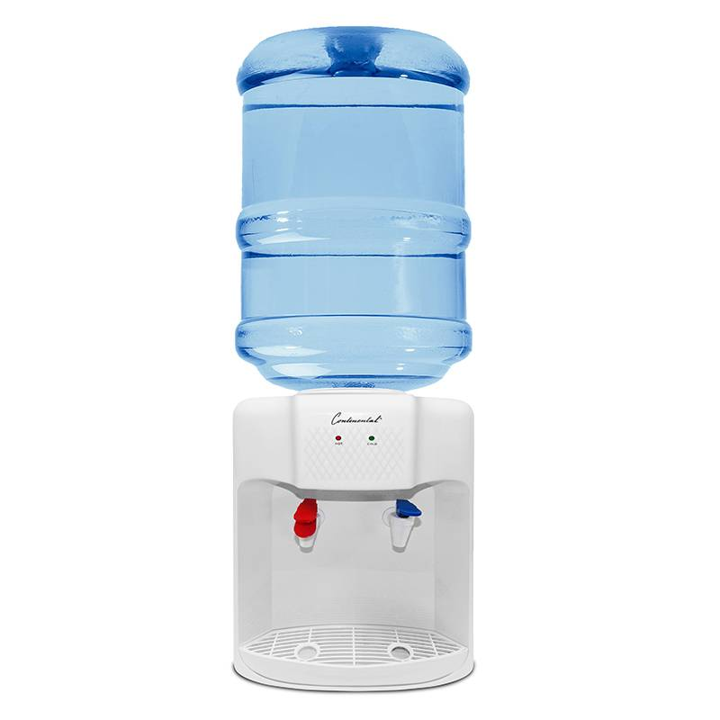
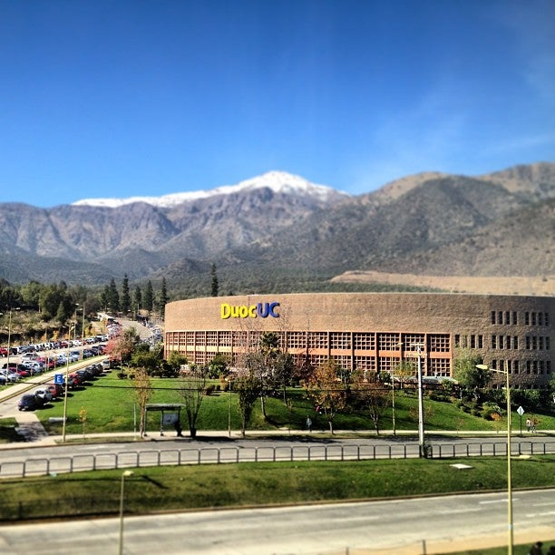

Aguas Duoc fue fundada en el año 2010, con la finalidad de abastecer empresas y negocios con suministros de agua de calidad. Aguas Duoc partió proporcionando suministros a negocios pequeños, pero a medida que el tiempo pasó, la compañía creció y ahora somos una de las principales abastecedoras de agua entre universidades, de las cuales se encuentran entre otros:
-Universidad del Desarrollo
-Universidad de los Andes
-Universidad Andrés Bello
En esta página podrás encontrar nuestros servicios a un precio accesible, información sobre nuestros clientes y finalmente, si tienes dudas acerca del equipo o de nuestros servicios, podrás comunicarte con nosotros en la ventana de contáctanos y te responderemos lo antes posible.© Todos los derechos reservados - Aguas Duoc